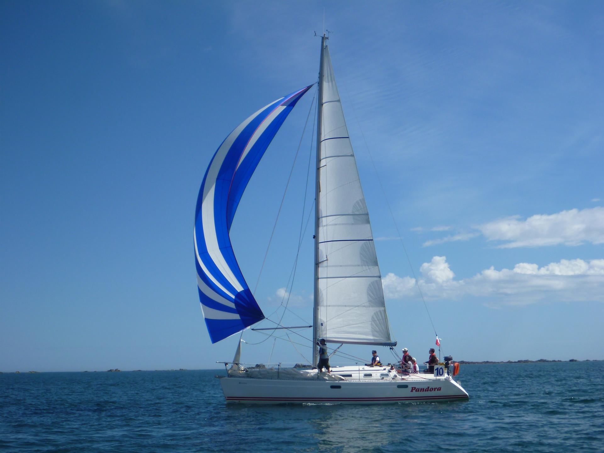
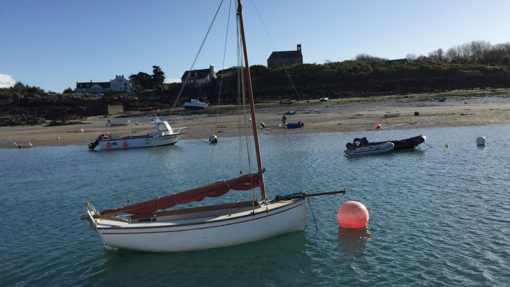

UN CLUB, LA MER, DES RENCONTRES
L’air du large.
L’esprit
d’équipage.
Quitter le quotidien. Apprendre ensemble.
Et partager bien plus qu’un bord.
De Paris au grand large,
la passion nous rassemble.

LES VRAIES PHOTOS. LES VRAIS SOUVENIRS.& au-delà
À CHACUN SON CAP
Une envie de mer ?
Pour découvrir, progresser ou se dépasser.
Il y a plus d’une façon d’embarquer.


De beaux moments,tout simplement.
BIEN PLUS QU’UN CLUB
La mer est encore
plus belle à plusieurs.
À l’ATSCAF Voile Paris, ce sont des bénévoles et une passion commune qui font avancer le bateau.
On partage les manœuvres, les découvertes, les repas à bord. On apprend les uns des autres. Et on a déjà envie de repartir.
Découvrez ces moments à travers les récits des équipiers et les albums photo du club.
ET LA PROCHAINE ESCALE ?
Votre prochaine aventure
commence par un échange.
Sorties en mer, entraînements, formations :
contactez le club pour connaître le programme à venir.
DEUX ADHÉSIONS POUR EMBARQUER
Bienvenue
à bord.
Pour participer, il faut adhérer à l’ATSCAF Grand Paris et à sa section voile : ce sont deux démarches et deux cotisations distinctes.
pour la section voile uniquement
La licence FFVoile est obligatoire et offerte aux adhérents de la section : elle n’est pas à ajouter aux 73 €. La cotisation ATSCAF Grand Paris est à régler séparément, au tarif indiqué sur son site.
Les deux adhésions sont valables du 1er septembre 2026 au 31 août 2027.
Pour régler la cotisation de la section voile, privilégiez le virement sur le compte Crédit Mutuel :
IBAN FR76 1027 8060 3100 0210 0711 156.
Pour toute question sur le règlement, contactez le club.